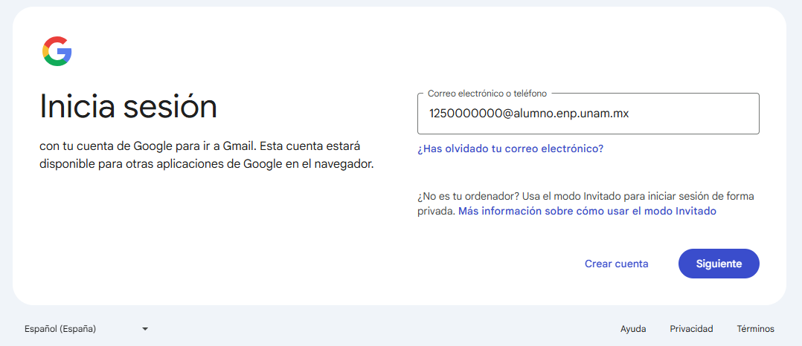

Proceso de Inscripción 2025-2026
El proceso de inscripción para primer ingreso de Iniciación Universitaria para ciclo escolar 2025-2026, se realizará del ¿? al ¿? de agosto del 2025, por lo que les solicitamos leer con atención cada uno de los pasos que integran el proceso de inscripción.
Notas importantes:
- Lee completamente y con atención el documento PROCESO DE INSCRIPCIÓN DE PRIMER INGRESO A INICIACIÓN UNIVERSITARIA, ya que en éste se detalla cada paso a seguir durante el proceso de inscripción.
- Únicamente se habilitarán los pasos en las fechas establecidas en el cronograma, por lo que es responsabilidad del estudiante y padre de familia leer detenidamente y con atención:
MUY IMPORTANTE
La Universidad entenderá con fundamento en el Artículo 29 del Reglamento General de Inscripciones que todo aquel aspirante asignado que no obtenga su documentación o no formalice su inscripción en el plantel, renuncia a ésta, por lo cual quedará cancelado su trámite de ingreso de forma definitiva.
NO habrá prórroga, por lo tanto NO se podrá realizar el proceso en fechas diferentes a las establecidas en el cronograma.
Inicio de Clases: ? de agosto del 2025
Paso 1 - ? DE AGOSTO
Descarga del sistema la documentación de asignación
-
1.1 Ingresa a https://www.dgae.unam.mx/
Deberás proporcionar al sistema:
- Folio del pre-registro.
-
1.2 Descarga, guarda e imprime la siguiente documentación:
-
1.2.1 Carta de asignación y protesta universitaria
Se guardan e imprimen ambas, en la esquina inferior derecha una dice ALUMNO y otra PLANTEL.
- 1.2.2 Orden de pago de inscripción.
- 1.2.3 Formato de solicitud de credencial UNAM.
-
1.2.1 Carta de asignación y protesta universitaria
Paso 2 - ? DE AGOSTO
2.1 ENTREGA DE CARTA DE ASIGNACIÓN
Se consigue a través de la descarga de documentos de asignación descrito en el paso 1 del proceso.
Imprime tus cartas de asignación (PLANTEL y ALUMNO) y protesta universitaria. Firma con bolígrafo de tinta azul la que dice PLANTEL en la esquina inferior derecha.
Preséntate en el plantel 2 (entrada sobre Av. Tezontle), de acuerdo con el siguiente horario:
- Estudiantes del turno MATUTINO: 9:00 a 13:00 horas.
- Estudiantes del turno VESPERTINO: 16:00 a 20:00 horas.
2.1 Descarga tu horario de clases
Para conocer tu horario de clases ingresa a este enlace, selecciona HORARIOS, elige tu grupo y da clic en ENVIAR.
2.2 Pago de inscripción (del ¿? al ¿? de agosto)
El pago de inscripción lo puedes realizar del 15 al 23 de agosto, conforme al Reglamento General de Pagos vigente, con las siguientes opciones:
- Pago en ventanillas de la zona comercial de Ciudad Universitaria: ubicadas en el costado sur de la Torre de Rectoría en el horario y medidas establecidas.
- Pago en el área de caja del plantel:
- Matutino: lunes a viernes 9:30 a 13:00 y de 13:30 a 15:00 horas.
- Vespertino: lunes a jueves 17:10 a 19:30, viernes 17:10 a 19:00 horas.
- Transferencia o ventanilla bancaria:
| Banco | Convenio | Clabe interbancaria |
|---|---|---|
| SCOTIABANK, S.A. | Convenio 3751 | No disponible |
| SANTANDER, S.A. | Convenio 6102 | 014180655015221193 |
| BBVA, S.A. | Convenio 1300962 | 012914002013009620 |
Notas:
- Si el pago se realiza en institución bancaria, en "REFERENCIA" deberás indicar tu número de cuenta (sin guión).
- Si realizas el pago por transferencia electrónica, en el campo "CONCEPTO" ingresa tu número de cuenta (sin guion) y en "REFERENCIA" escribe la cadena 9999 o 999999 según el banco.
Recuerda que la cantidad mínima aceptada por los bancos para el pago de inscripción es de $100.00 M.N. (cien pesos mexicanos).
Paso 3 - ? DE AGOSTO
3.1 Ingreso al Correo Institucional
La Dirección General de la Escuela Nacional Preparatoria generará a sus estudiantes de nuevo ingreso cuentas de correo institucionales que serán utilizadas a lo largo del ciclo escolar. Dicho correo electrónico estará conformado de la siguiente manera:
numero_de_cuenta_del_alumno@alumno.enp.unam.mx
Ejemplo: 1250000000@alumno.enp.unam.mx
Este paso lo deberás realizar en casa. Para conocer cómo realizar este paso, ingresa a:
Guía para ingresar al correo institucional
Podrás ingresar al correo institucional el ¿? de agosto.
3.2 Examen Diagnóstico de Inglés
Consideraciones que debe tomar en cuenta el estudiante para la realización de ambos exámenes:
- Contar con un equipo de cómputo y conexión a internet.
- Tener acceso a cualquiera de los siguientes navegadores: Google Chrome y Mozilla Firefox.
- Estar solo en el espacio en el que va a realizar el examen y no contar con otros dispositivos electrónicos.
- Leer con detenimiento las instrucciones del examen.
- Contar con una hoja y lápiz para poder realizar los cálculos matemáticos requeridos.
- Evitar realizar actividades fuera de la pantalla del examen, ya que no está permitido. En este caso el alumno será notificado.
Este paso realízalo desde casa. El examen tiene una duración aproximada de 2 horas y estará disponible del 16 de agosto a las 12:00 horas hasta el 18 de agosto a las 18:00 horas.
Ingresa a: Enlace del examen de inglés
Pasos:
- Proporciona tu número de cuenta y grupo.
- Contesta el examen.
3.3 Examen Diagnóstico de Conocimientos
Este paso realízalo desde casa. El examen tiene una duración aproximada de 2 horas y estará disponible del 16 de agosto a las 12:00 horas hasta el 18 de agosto a las 18:00 horas.
Ingresa a: Enlace del examen de conocimientos
Pasos:
- Proporciona tu número de cuenta y grupo.
- Contesta el examen.
Paso 4 - ? DE AGOSTO
4. Ceremonia de Bienvenida
Se llevará a cabo el sábado ¿? de agosto en el auditorio “Enrique Ruelas” del plantel 2.
El acceso al plantel será con su CARTA DE ASIGNACIÓN (la de alumno), favor de llevarla para presentarla en la entrada.
Para conocer el horario en que deberás presentarte visita la siguiente liga:
Ver horario de bienvenidaPreséntate de acuerdo con el horario del grupo asignado. Lee cuidadosamente las indicaciones que ahí se comparten.
Paso 5 - ? DE AGOSTO
5.1 INICIO DE CLASES.
Preséntate el día 19 de agosto en el plantel 2 (entrada sobre Av. Tezontle), de acuerdo con el siguiente horario:
- Estudiantes del turno MATUTINO: 9:00 a 11:30 horas.
- Estudiantes del turno VESPERTINO: 12:00 a 14:30 horas.
NOTAS:
Para ingresar deberás presentar tu CARTA DE ASIGNACIÓN.
ÚNICAMENTE TE PRESENTARÁS AL EXAMEN MÉDICO AUTOMATIZADO.
CLASES NORMALES EL DÍA ¿? DE AGOSTO.
5.2 Examen Médico Automatizado (EMA).
Se llevará a cabo dentro del plantel, en el auditorio “Enrique Ruelas”.
Los estudiantes deberán presentarse con:
- 5.2.1 Lápiz del número 2
- 5.2.2 Una tabla o cuaderno para que puedas recargarte
- 5.2.3 Sacapuntas y goma para borrar
- 5.2.4 Tu estatura y peso medidos previamente
- 5.2.5 Traer su cartilla de vacunación
Paso 6 - ? DE AGOSTO
6. Entrega de documentos en Avenida del Imán
Para concluir su proceso de ingreso a la UNAM, será indispensable que el padre o tutor del alumno seleccionado acuda el:
Lunes 19 o martes 20 de agosto de 2024
al Local de Registro de Aspirantes, ubicado en:
Avenida del Aspirante S/N, esquina Avenida del Imán, Ciudad Universitaria, Delegación Coyoacán, Ciudad de México.
Documentación requerida:
- Certificado de primaria original.
- Acta de nacimiento original de reciente expedición.
- Fotocopia de la CURP, ampliada al 200%.
Horario de atención:
De 9:30 a 14:30 y de 17:00 a 18:30 horas.
Nota Importante:
La madre, el padre o el tutor legal del aspirante seleccionado deberá entregar el original de su certificado de estudios de primaria concluidos en el ciclo escolar 2023-2024, con un promedio mínimo de 7.0 (siete) y el acta de nacimiento de reciente expedición, en buen estado, así como fotocopia de la Clave Única de Registro de Población (CURP) en el Local de Registro de Aspirantes.
Nota: Si la CURP es con el formato anterior, la fotocopia deberá estar ampliada al 200% en hoja tamaño carta, utilizando una sola cara de la hoja.
Importante
La Universidad entenderá, con fundamento en el Art. 29 del Reglamento General de Inscripciones, que todo aquel aspirante asignado que no obtenga su documentación o no formalice su inscripción en el plantel y la entrega documental en Ciudad Universitaria, renuncia a ésta, por lo cual quedará cancelado su trámite de ingreso en forma definitiva.
Este trámite podrá realizarlo tu padre o tutor, no es necesario que acudas.
NO habrá prórroga para realizar estos trámites.
Paso 7 - ? DE AGOSTO
7.1 Captura de Datos Personales
Ingresa a la página de control escolar http://escolares.prepa2.unam.mx/
Usuario: Tu número de cuenta
Contraseña: Tu fecha de nacimiento con el formato ddmmaaaa
Da clic en “Captura de datos personales”.
Es muy importante que la información que proporciones sea verídica, ya que será el medio de contacto de la institución contigo.
Es importante que tengas a la mano la siguiente información ya que te será solicitada por el sistema:
- CURP del estudiante
- Correo electrónico institucional (numdecuenta@alumno.enp.unam.mx)
- Correo electrónico alternativo de Gmail del estudiante
- CURP de tu padre, madre o tutor
- CURP de una persona de contacto
7.2 Descarga e Imprime Comprobante de Inscripción Nuevo Ingreso
Ingresa a la página de control escolar http://escolares.prepa2.unam.mx/
Usuario: Tu número de cuenta
Contraseña: Tu fecha de nacimiento con el formato ddmmaaaa
Da clic en “Imprime comprobante de inscripción” y sigue los pasos que te indique el sistema.
Nota: Los documentos que obtendrás en el paso 7.2 son:
- Comprobante de inscripción nuevo ingreso
- Carta compromiso
- Carta de recomendaciones a los tutores
- Orden de pago de inscripción
- Mapa del plantel
IMPORTANTE:
Si no realizas la Captura de Datos Personales no podrás descargar tu comprobante de inscripción.
Paso 8 - ? DE AGOSTO
8.1 Toma de fotografía para la credencial de la UNAM
Este paso se llevará a cabo durante el horario de clases. Favor de presentarse esos días en el horario normal de las clases. Deberás esperar a que la prefecta vaya a tu salón a buscar al grupo completo para dicha actividad y los conduzca al Laboratorio de Ciencias 3 de Iniciación Universitaria.
Para la toma de fotografía será INDISPENSABLE PRESENTAR el formato de solicitud de credencial UNAM, obtenido en el paso 1.
8.2 Toma de foto para credencial del PLANTEL 2
Después de haber concluido la toma de fotografía de la UNAM, la prefecta te conducirá al Laboratorio de Ciencias 4 para la toma de fotografía del plantel.
Al finalizar ambas tomas de fotografía volverás a tu salón y continuarás con tus clases.
NOTA: ES IMPORTANTE LLEVAR A LA ESCUELA EL FORMATO DE SOLICITUD DE CREDENCIAL UNAM LOS TRES DÍAS HASTA QUE SE TE HAYA TOMADO LA FOTO.
Paso 9 - ? DE AGOSTO
9. Carga de Documentos
Ingresa a la página de control escolar: http://escolares.prepa2.unam.mx/
Usuario: Tu número de cuenta
Password: Tu fecha de nacimiento en formato ddmmaaaa
Haz clic en “Paso 9. Carga de documentos” y sigue los pasos que indique el sistema.
Requisitos para la carga de documentos
Deberás cargar tus documentos en formato PDF, cada uno por separado, en el enlace correspondiente. No deberá faltar ningún documento.
Documentos requeridos:
- COMPROBANTE DE INSCRIPCIÓN: Otorgado por el sistema de inscripciones en el PASO 7.2. (Una sola página).
- RECIBO TELEFÓNICO: No mayor a 3 meses de antigüedad, puede ser de telefonía local o celular. Solo se debe enviar la carátula donde aparezcan los datos y el número telefónico. No se aceptan recibos de predial o luz. (Una sola página).
- CARTA COMPROMISO: Otorgada en el PASO 7 del sistema de reinscripciones. Debe estar firmada con bolígrafo de tinta azul por el estudiante y su tutor. Posteriormente, digitalizar y subir al sistema. (Una sola página).
- CARTA DE ASIGNACIÓN: Solo se debe subir la hoja de ALUMNO.
Importante:
- Los archivos PDF no deben exceder los 250Kb de tamaño.
- Una vez subidos, los documentos no se pueden modificar.
- Es responsabilidad del estudiante asegurarse de que los documentos sean correctos.
Puedes consultar algunas opciones de aplicaciones para celular en este enlace.
Puedes consultar un compresor de archivos en este enlace.
¿ ? Dudas o comentarios
Estudiante: si tienes alguna duda sobre el proceso de reinscripción, podrás escribir un mensaje al correo de Secretaría de Servicios Escolares de Iniciación Universitaria:
escolares.iniciacion@enp.unam.mx
O acudir a las ventanillas de servicios escolares del plantel en el siguiente horario:
TURNO MATUTINO: 9:00 – 13:00 horas.
TURNO VESPERTINO: 16:00 – 20:00 horas.